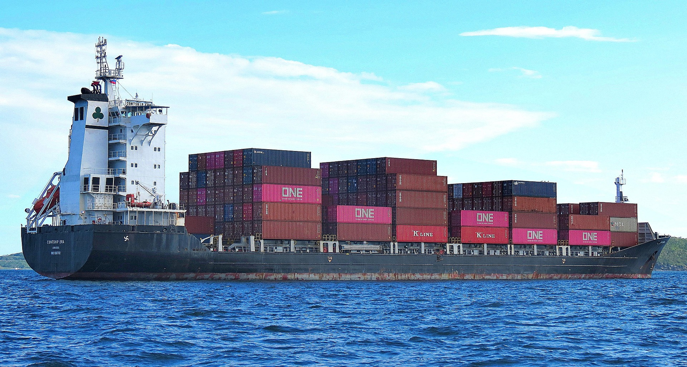
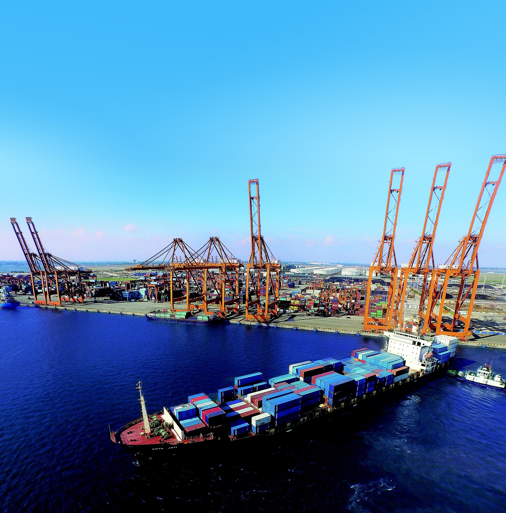

Container Transportation
Safe and efficient movement of cargo containers across inland and coastal waterways.

Chuksmili Waterways was founded with a simple but powerful vision: to build a logistics company defined by trust, professionalism, and dependable delivery services across regional and international waterways.
What began as a growing cargo movement operation has evolved into a trusted marine logistics partner serving businesses, distributors, manufacturers, and commercial clients across major trade routes.
Over the years, we have remained committed to doing the simple things exceptionally well — delivering on time, communicating transparently, and handling every shipment with the urgency and care it deserves.
Because behind every container we transport is a business depending on us to deliver with precision.
To move more than cargo by delivering reliable, transparent, and efficient marine logistics solutions that support businesses, livelihoods, and commercial growth.
To become Africa’s most trusted marine logistics network, connecting businesses across borders through dependable and modern cargo transportation systems.
We provide coordinated marine logistics and container transportation services designed to keep businesses moving efficiently.
Safe and efficient movement of cargo containers across inland and coastal waterways.
Organized shipment coordination and dependable cargo handling solutions for businesses.
Supporting commercial operations with streamlined loading, movement, and distribution systems.
Real-time cargo tracking and communication throughout the transportation process.
Our reputation has been built through consistency, accountability, and operational excellence.
Years Experience
Successful Deliveries
On-Time Delivery Rate
Business Partnerships
Our operations are structured around efficiency, safety, precision, and coordinated cargo movement across key commercial waterways.
From shipment planning to final delivery, every stage of our logistics process is managed with professionalism and attention to detail.

We deliver with consistency and professionalism.
Clear communication throughout every shipment process.
Every cargo movement is handled with responsibility.
Operational discipline and cargo protection come first.
Delivering cargo with precision, commitment, and over a decade of operational excellence.
Contact Us